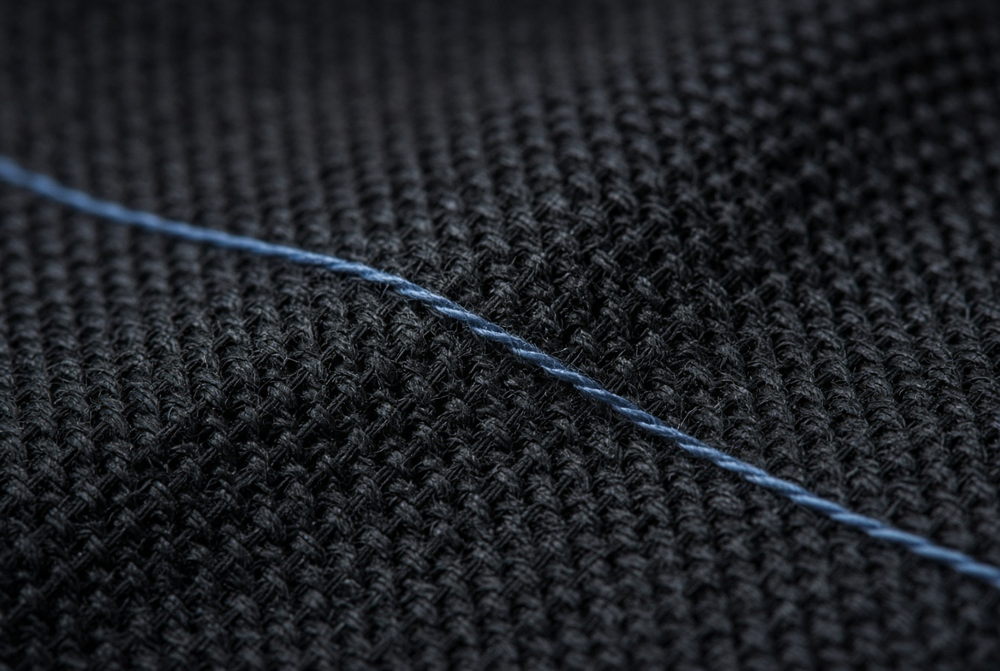

02 Oct 2026
On the name

Misère Perdue is the full name. On the clothes and on the door it shortens to MISERY. One is the house, the other is the mark.
Lost misery is not a slogan. It is the name the work sits under: the journal, the cut, the book. The English line people already know stays on the lock screen. gotta be bad?